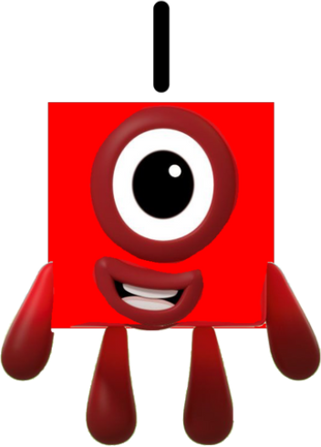
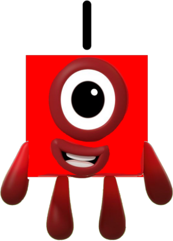
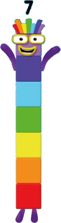
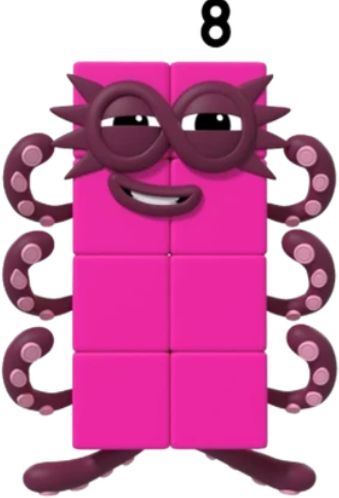
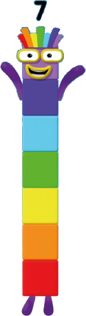
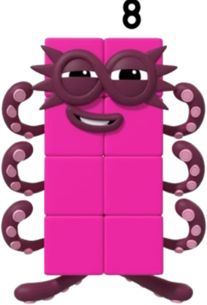
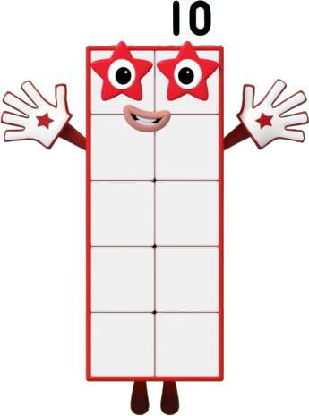
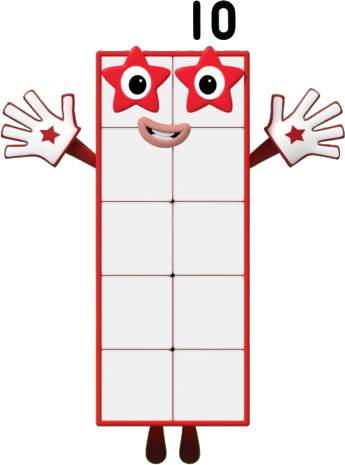

La app más divertida y
educativa para niños
de 3 años
Numberblocks World es una divertida aplicación de vídeo a la carta y juegos por
suscripción dirigida a niños a partir de 3 años, con un grupo de edad principal de
4 a 6 años, creada por el equipo de Alphablocks Ltd. y Blue Zoo Animations
Studio, ganador de un premio BAFTA.


 



 



 
